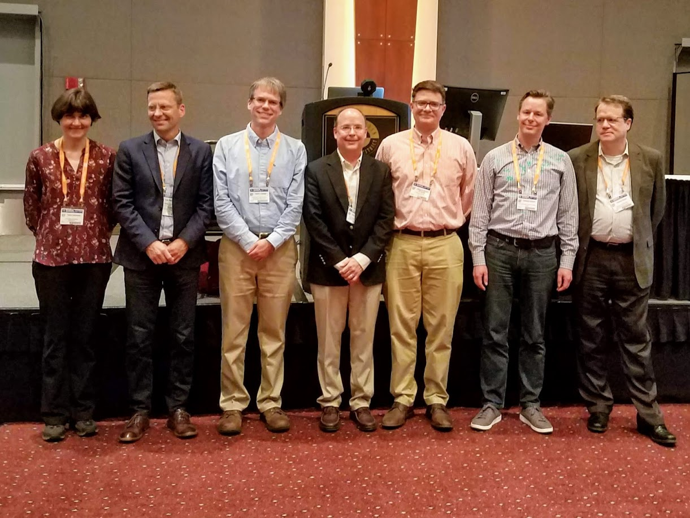
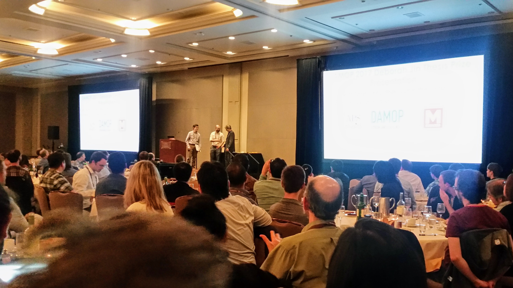
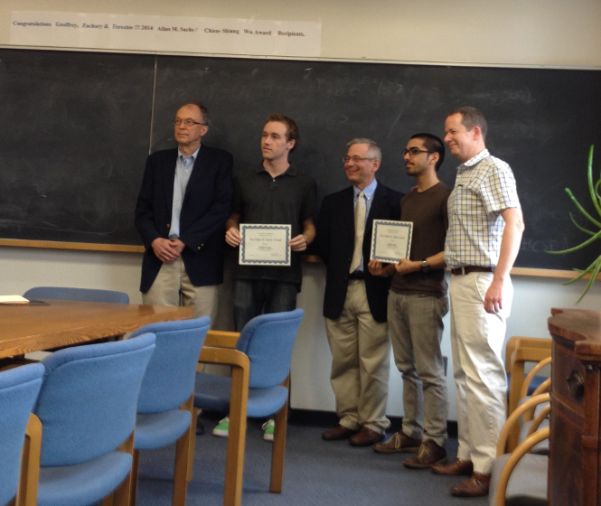
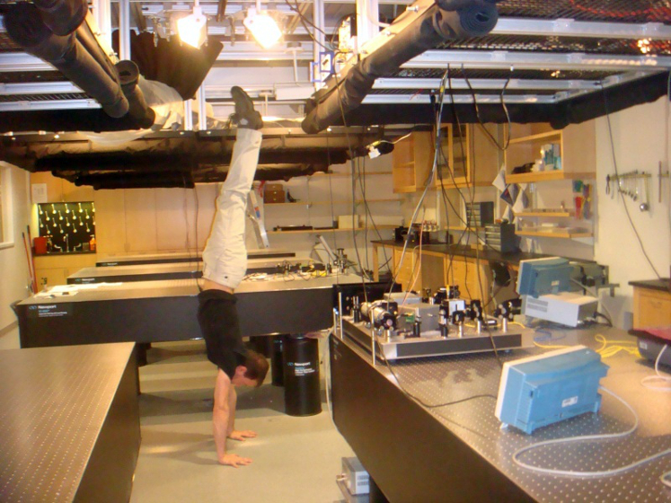
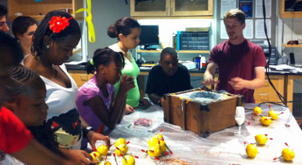

Prof. Tanya Zelevinsky
Fundamental science with ultracold molecules; atomic and molecular clocks; precision measurements in molecular physics and quantum chemistry.
John Templeton Foundation News, July 2023
Columbia Quantum Initiative, May 2022
Nature Physics News & Views, November 2019
Chemistry World, September 2018
Nature News & Views, July 2016
Nature Physics News & Views, January 2015
Columbia research news, December 2012
Presidential Early Career Award for Scientists and Engineers, 2009
Our postdoc, Ivan Kozyryev, receives his 2019 APS DAMOP Outstanding Thesis Prize.

Prof. Z receives her 2018 APS Fellowhsip at the 2019 DAMOP meeting.

Our PhD graduate, Mickey McDonald, receives his 2017 APS DAMOP Outstanding Thesis Prize!

A graduate student, Geoff Iwata, wins the 2014 Allan M. Sachs Teaching Award.

A founding lab member, Gael Reinaudi, performs a lab cleanup in 2009.
We always enjoy giving tours of our lab and explaining the science behind the mess of cables and mirrors. We have worked with middle school summer camps, as well as with many other student groups. ZLab members have volunteered their time teaching courses to school-aged students, giving public talks, and judging science fair projects at local middle & high schools. We are working with Success Academy High School of the Liberal Arts to provide internship opportunities to students who are interested in science, math, engineering, and programming.
Chris Osborn demonstrates the wacky properties of a starch-water mix to a middle school summer camp.
Various videos from ZLab can be accessed by clicking the owl.